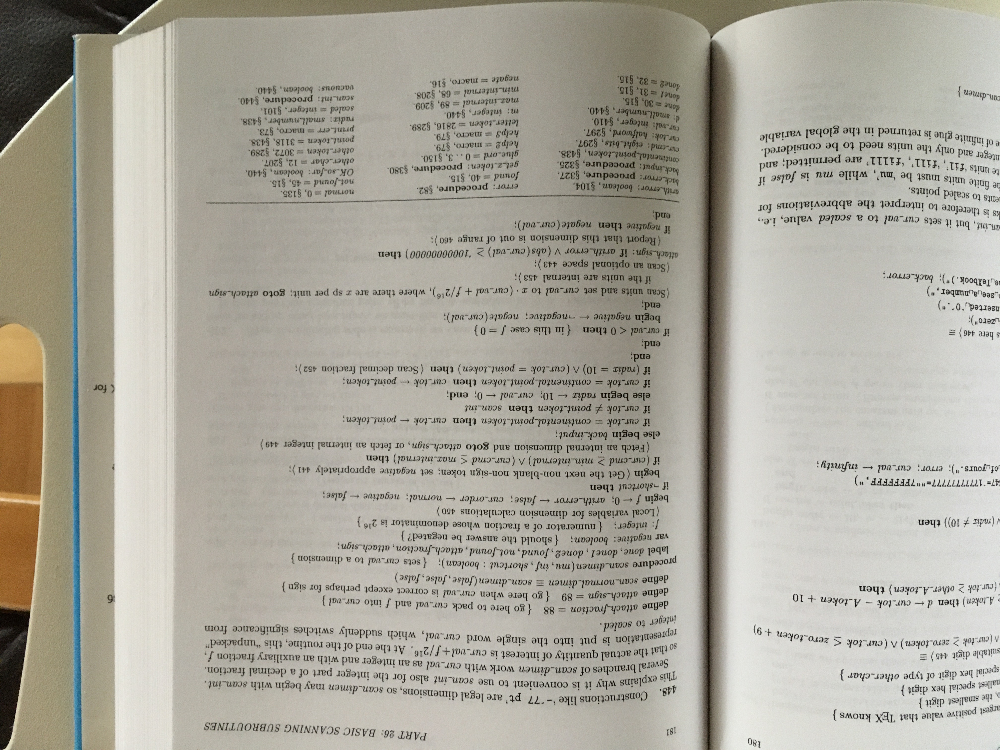

Literate Programming
-
Einführung in Literate Programming
-
Vorteile gegenüber getrennter Dokumentation
-
Schwächen bei klassischem Ansatz
-
Vorstellung einer Verbesserung
Sicht des illiteraten Programmierers
-
Source-Code und dessen Dokumentation hängen zusammen
-
müssen zusammen gepflegt und versioniert werden
-
aber Source-Code ist für die Ausführung am wichtigsten
-
Source-Code ist selbsterklärend
-
Beispiele: javadoc, doxygen
Sicht von Literate Programming
-
Dokumentation beschreibt, was ein Programm macht
-
und wie das Programm etwas macht
-
und warum das Programm etwas macht
-
der Source-Code ist ein Teil dieser Dokumentation
Illiterate Programme
-
Beispiele für Programme, die nicht nach den Prinzipien des Literate Programming dokumentiert werden
Open Source
-
viele Open Source Projekte sind auf den Code konzentriert
-
Tanenbaum beschreibt Minix-System in seinem Buch
-
Wirth beschreibt ein Betriebssystem mit Compiler in seinem Buch
-
Kernighan beschreibt eine Sammlung von Kommandozeilen-Tools in Fortran
-
Sargon Chess ist in Z80-Assembler geschrieben
-
von Jamis Buck
-
Labyrinthe bauen in Ruby
-
ein Buch, in dem
git in Ruby nachgebaut wird
Literate Programs
-
Beispiele für Literate Programs
-
Raytracer beschreibt Grundlagen des Raytracings neben deme Code
-
C-Compiler ist ein portabler C-Compiler in C
-
Ruckert beschreibt Bibliothek zum dekodieren von MP3
Strukturierung von Literate Programs
-
können verwendet werden, bevor sie definiert werden
-
können erweitert werden

-
Beispiel Literate Fragment
-
TODO: Source Literate Fragment
Vorteile Literate Programming
Zusammenhang
Intelligente Ordnung
Ausdrucksstärke
Querverweise
Nachteile Literate Programming
Nicht aufbauend
Granularität
Vollständigkeit
Syntax
Slide-Programming ⊇ Literate-Programming
Folien
aufbauend
modular
sprach-neutral
Markdown
HTML
Beispiel-Programm
-
Slide-Programming an konkretem Beispiel erfahren
-
Texte im bestimmten Stil generieren
-
Referenz: Computer-Kurzweil
-
erst einfache Häufigkeits-Analyse
-
dann daraus Text generieren
-
dann auf feste Sequenz-Längen erweitern
Nächste Schritte
Testing